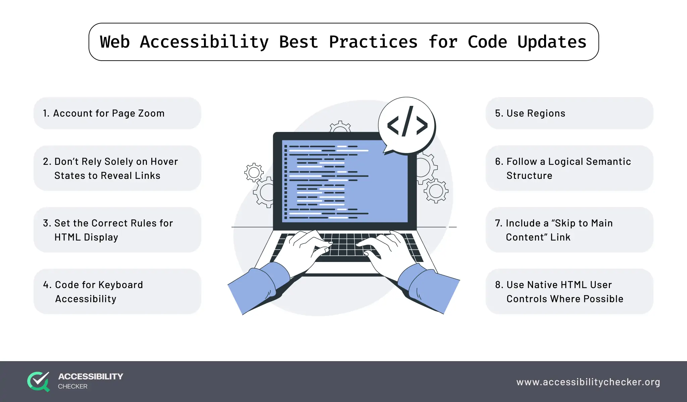

Introduction
Welcome to this accessible and stylish web page. It demonstrates best practices in web accessibility with semantic HTML, improved contrast, accessible media, and interactive JavaScript features. Now featuring a dynamic, futuristic background that stays fixed while you scroll.
Features
This page showcases:
- Semantic HTML structure without deprecated tags.
- High-contrast design for easier reading.
- Accessible image and media elements with descriptive text.
- Interactive elements with smooth transitions.
- Transparent, blurred containers giving a floating effect.
Accessible Media
Below is an image example with descriptive alternative text:
Audio Example
Transcript: This audio clip explains web accessibility best practices, including the use of semantic HTML, improved color contrast, and alternative text for images to enhance usability for all users.
Accessible Data Table
| Employee | Department | Performance Rating |
|---|---|---|
| Alice | Development | Excellent |
| Bob | Marketing | Good |
| Charlie | Support | Very Good |
Interactive Demo
Click the button below to experience the super advanced interactive effect: